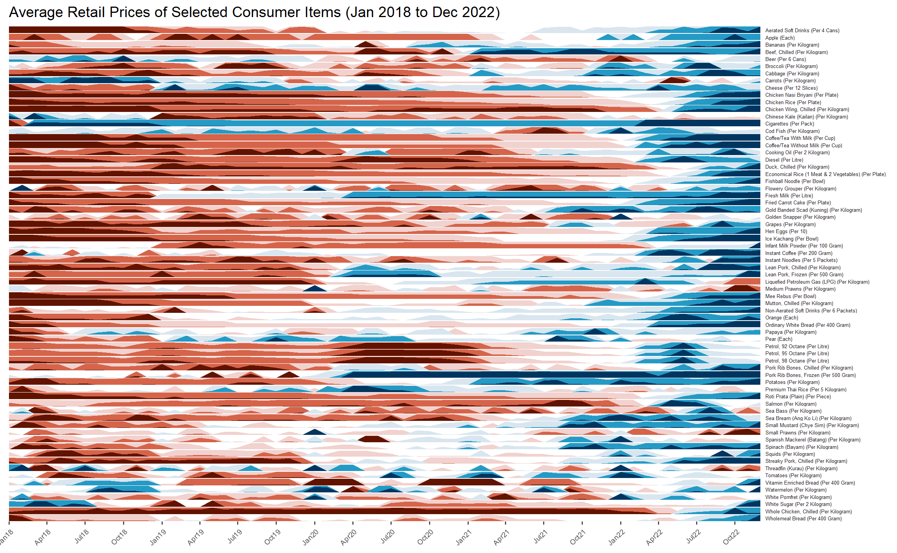

Hands-on Exercise 15 (Week 7: Time on the Horizon: ggHoriPlot methods)
Horizon Plot
20.1 Overview
A horizon graph is an analytical graphical method specially designed for visualising large numbers of time-series. It aims to overcome the issue of visualising highly overlapping time-series as shown in the figure below.

A horizon graph essentially an area chart that has been split into slices and the slices then layered on top of one another with the areas representing the highest (absolute) values on top. Each slice has a greater intensity of colour based on the absolute value it represents.

In this section, we will plot a horizon graph by using ggHoriPlot package.
Before getting started, please visit Getting Started to learn more about the functions of ggHoriPlot package. Next, read geom_horizon() to learn more about the usage of its arguments.
20.2 Getting started
20.2.1 Step 1: Data Import
For the purpose of this hands-on exercise, Average Retail Prices Of Selected Consumer Items will be used.
Use the code chunk below to import the AVERP.csv file into R environment.
The date field is in the wrong format and in chr field.
20.2.2 Step 2: Plotting the horizon graph
Next, the code chunk below will be used to plot the horizon graph.
Show the code
averp %>%
filter(Date >= '2018-01-01') %>%
ggplot() +
geom_horizon(aes(x = Date, y=Values),
origin = 'midpoint', #<< mirror at midpoint
horizonscale = 6) + #<< 6 months intervals
facet_grid(`Consumer Items` ~.) + #<< put a function to inform to output as facet grid??
theme_few() +
scale_fill_hcl(palette = 'RdBu') +
theme(panel.spacing.y=unit(0,'lines'),
strip.text.y = element_text(size = 5, #<<< the labels size, try and error
angle = 0,
hjust = 0),
legend.position = 'none',
axis.text.y = element_blank(),
axis.text.x = element_text(angle = 45,
hjust = 1,
size=7),
axis.title.y = element_blank(),
axis.title.x = element_blank(),
axis.ticks.y = element_blank(),
panel.border = element_blank()) +
scale_x_date(expand=c(0,0),
date_breaks = "3 month",
date_labels = "%b%y") +
ggtitle('Average Retail Prices of Selected Consumer Items (Jan 2018 to Dec 2022)')